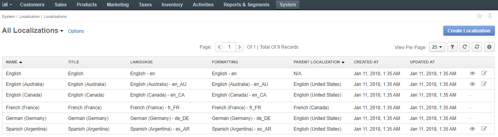
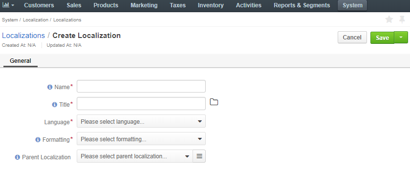

Localization helps to bind the language and locale-specific formatting for smooth localization of the Oro system elements and messages visible to the user.
To enable easy inheritance from the parent or similar language, localizations may form groups organized as an ancestors tree, for example:
English
- English (UK)
- English (USA)
- English (Canada)
To view all localizations, navigate to System > Localization > Localizations in the main menu.
The following information about the localizations is available in the Localizations list:
| Name | Description |
|---|---|
| NAME | The name of the localization that identifies settings for the particular locale. It is displayed in the management console. |
| TITLE | The name of the localization set with a specific configuration displayed to the user in the storefront. |
| LANGUAGE | The target language of the UI elements displayed to the user in the storefront. |
| FORMATTING | The formatting style of the corresponding target language that is applied in the localized instance. |
| PARENT LOCALIZATION | Another localization that the current one should fall back to whenever a system element has no translation in the target language. |
| CREATED AT | The date when the localization is created. |
| UPDATED AT | The date when the localization is updated. |
With every item in the Localizations list, you can perform the following actions:
Hover over the More Options menu to the right of the necessary localization:
Create a new localization with a specific configuration by clicking Create Localization in the top right.
The following page displays:
Once the localization is configured and the cache is updated, you need to enable it in the system configuration menu. Proceed to the Localization Settings section and follow the steps described in the guide.